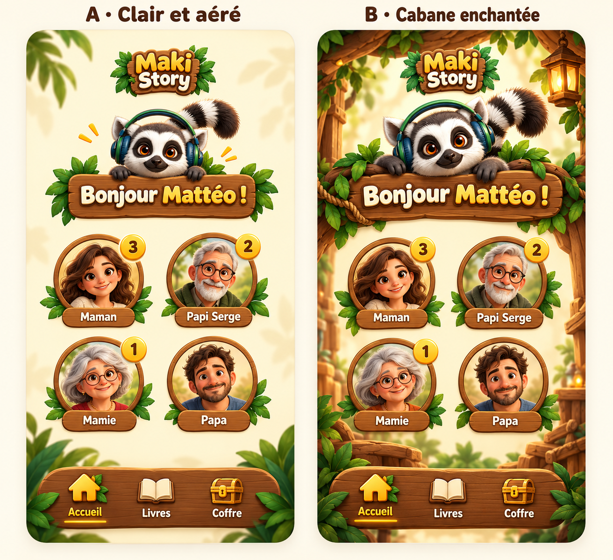
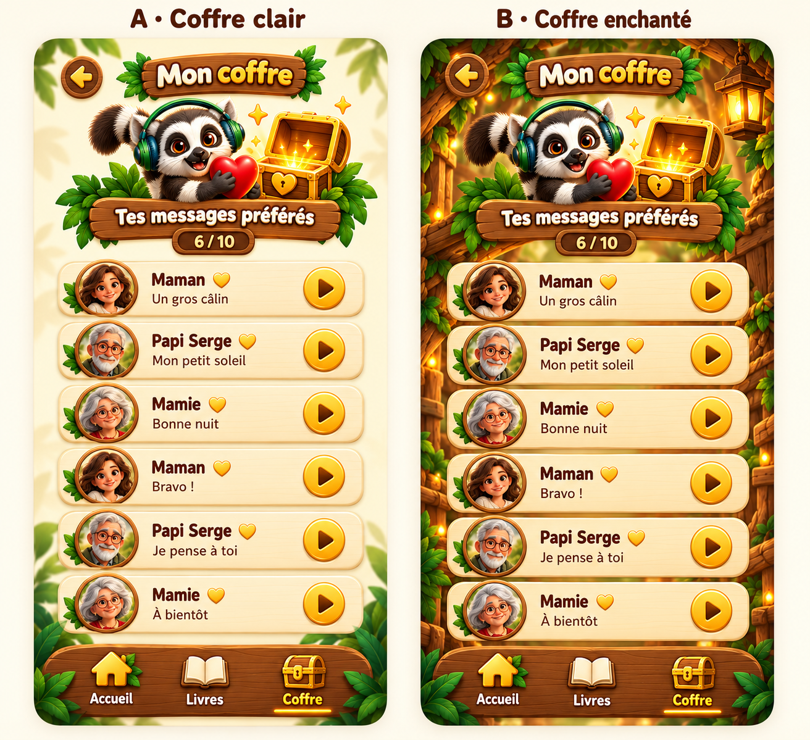
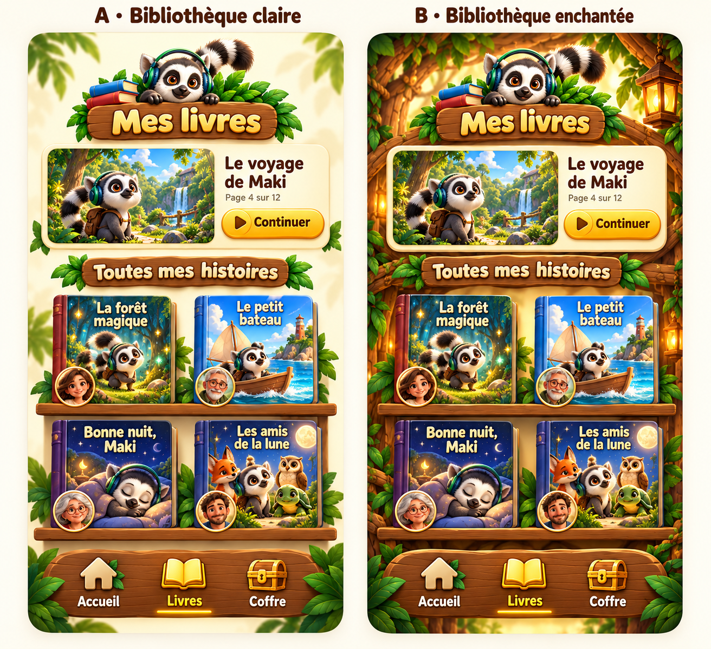
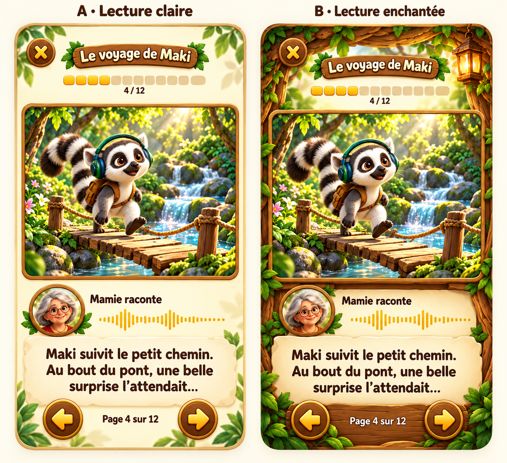
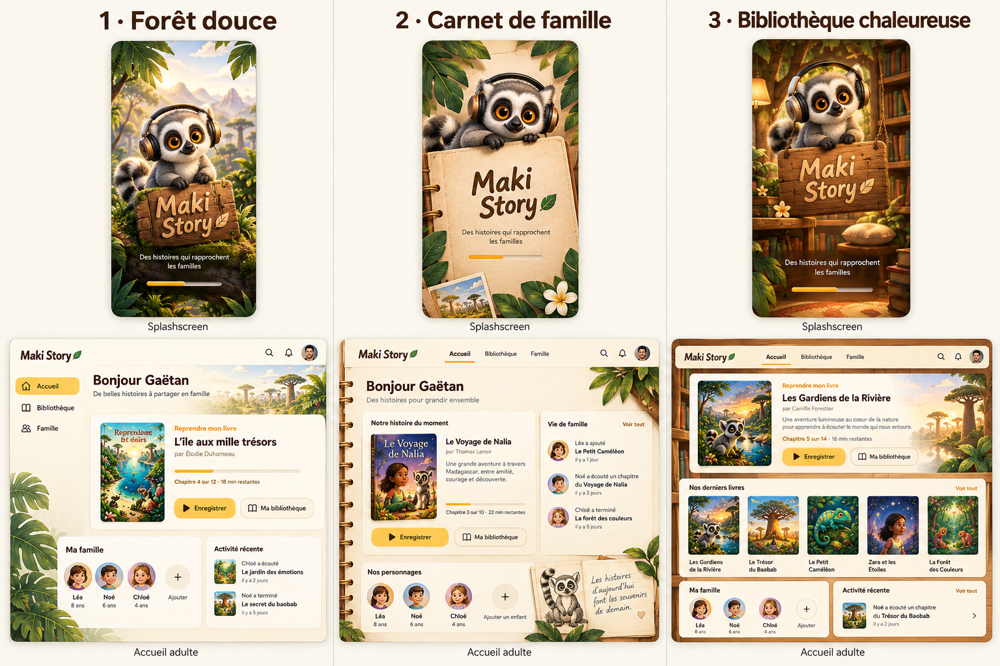
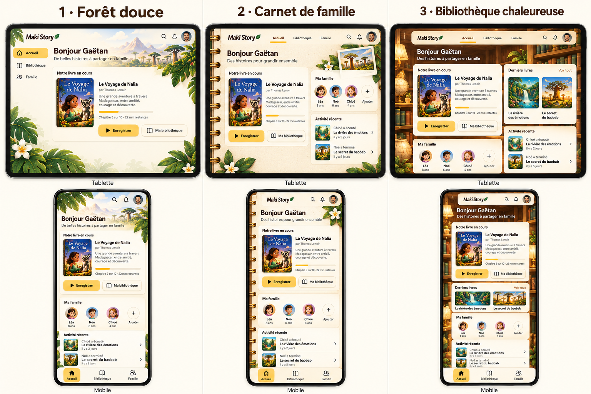
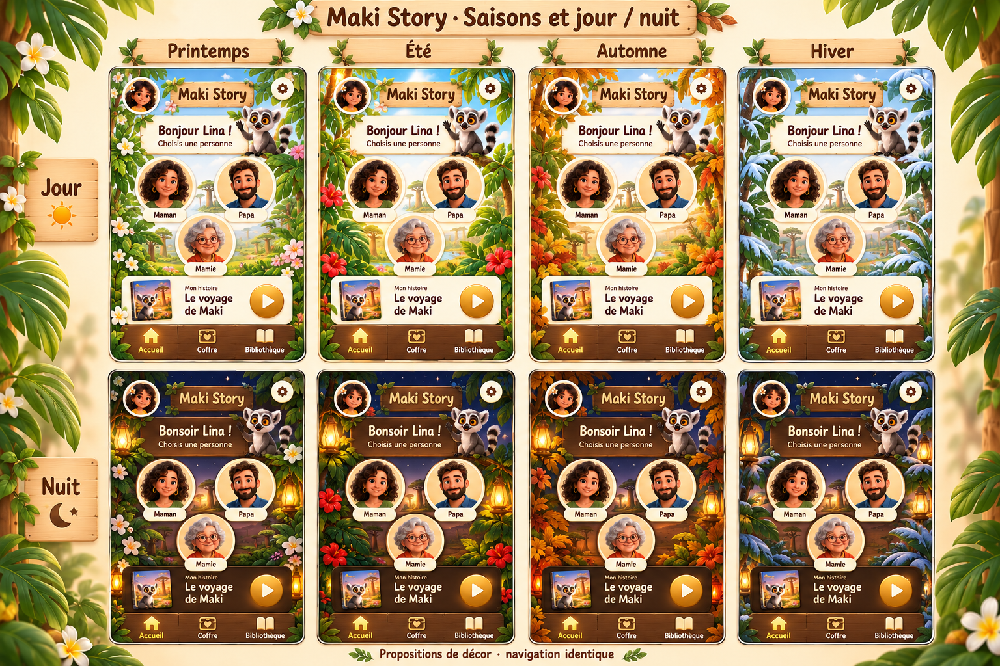
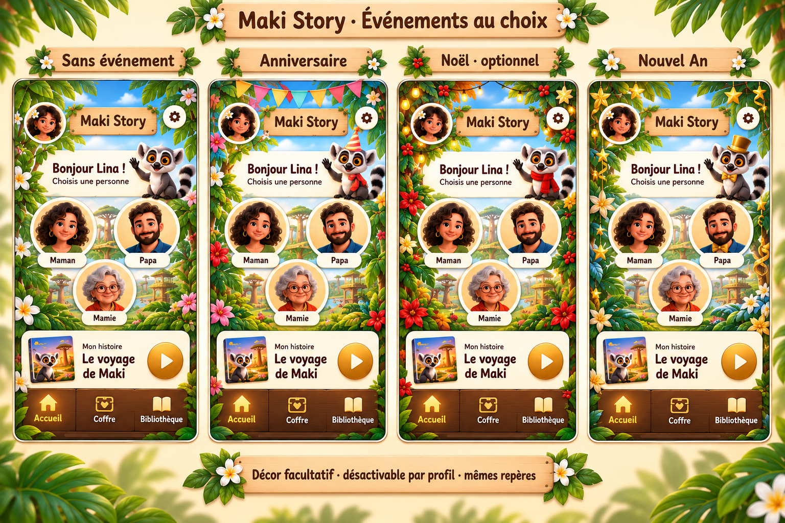

Maki Story — Galerie des maquettes Planches de référence, recherches et décors. Cliquer une image pour l’ouvrir en pleine taille. Les propositions d’ambiance saisonnière et d’événements restent à implémenter.
Index et contexte · Spécification
Recherche visuelle 01 — 2026-10-192026-10-19 
Recherche visuelle 02 — 2026-10-192026-10-19 
Recherche visuelle 03 — 2026-10-192026-10-19 
Recherche visuelle 04 — 2026-10-192026-10-19 
Recherche visuelle 05 — 2026-10-192026-10-19 Recherche visuelle 06 — 2026-10-192026-10-19 Recherche visuelle 07 — 2026-10-192026-10-19 Recherche visuelle 08 — 2026-10-192026-10-19 Recherche visuelle 09 — 2026-10-192026-10-19 Recherche visuelle 10 — 2026-10-202026-10-20 Recherche visuelle 11 — 2026-10-202026-10-20 Recherche visuelle 12 — 2026-10-202026-10-20 Recherche visuelle 13 — 2026-10-202026-10-20 
Trois thèmes adultes : desktop et splashscreen2026-10-22 
Trois thèmes adultes : tablette et mobile2026-10-22 Trois thèmes enfant : Lina, profil fictif2026-10-22 Ressource : décor bibliothèque original2026-10-22 
Nouvelle proposition : quatre saisons, jour et nuit2026-10-23 
Nouvelle proposition : événements facultatifs2026-10-23